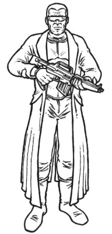

| Nom | Nettoyeur Yakuza | Rôle | Solo | Armure |
|  | Sexe | Age |  |
| H/F | 18+ |
| Caractéristiques |
| INT | 5 |
| REF | 9 |
| TECH | 4 |
| SF | 6 |
| BT | 4 |
| CH | 4 |
| MVT | 7 |
| CON | 8 |
| EMP | 3 |
| Course | 35 m |
| Saut | 1,75 m |
| Levée | 40 kg |
 | NomEnc. |
Gilet Kevlar lourd0
Pantalon légèrement blindée0
Total0 |
| |
| Compétences[Base / Total] | [Base / Total] |
|
Capacités spéciales
Sens du combat[ 7 / ]
Sang froid
Connaissance de la rue[ 8 / ]
Interrogatoire[ 6 / ]
Intimidation[ 7 / ]
Intelligence
Perception[ 5 / ]
Suivre/pister[ 6 / ]
Survie en milieu urbain[ 6 / ]
|
Réflexe
Armes automatiques[ 5 / ]
Armes lourdes[ 4 / ]
Art martial (Karaté)[ 6 / ]
Fusil[ 5 / ]
Mêlée[ 6 / ]
Pistolet[ 7 / ]
|
| |
| Arme(s)[#] | Type | Préc. | Diss. | Mun. | Dégâts | Charg.[#] | Cad. | Fiab. | Portée |
| Arasaka P-237[2] | PST | +1 | V | 12 mm | 4D6+1 | 12[3] | 2 | TF | 50 m |
| IMI Galil Patriot[1] | RIF | +1 | N | 7,62C | 6D6+2 | 35[2] | 2/3/25 | TF | 400 m |
| |
| Equipement | Cybernétique |
| Commo Mastoïdien | Optishields (amplificateur de lumière, thermographe, zoom électronique)
|
| Argent | 5D10+10 eb |
| |
| Background |
| Nettoyeur exécutant les basses oeuvres. |